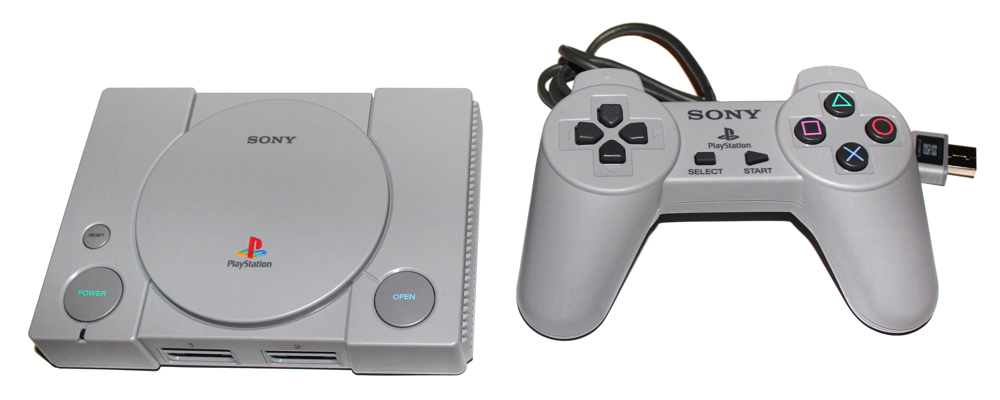

Gaming (Marco Verch, CC BY 2.0, https://www.flickr.com/photos/149561324@N03/42383170930)
Historie
Die erste Gaming Generation
Home Pong (Nelo Hotsuma, CC BY 2.0, https://commons.wikimedia.org/wiki/File:Pong_%2828684491143%29.jpg)
Obwohl "Tennis for two" das erste Videospiel ist, Oktober 1958 Veröffentlicht, ist Pong, von Atari 1972 Veröffentlicht, die bekanntere alternative.
Pong wurde zuerst auf Spielhallen-Automaten Gespielt und so an Popularität gewann.
Doch nur 2 Jahre später 1974 wurde Home Pong an denn Markt gebracht, die erste Heimkonsole wurde erschaffen.
1972 wurde außer Pong von Atari auch noch die Magnavox Odyssey Veröffentlicht, die ursprünglich zur auszubilden von Militärischem personal programmiert wurde.
Da dies aber nicht funktioniert hat, wurde es in Richtung Unterhaltung umprogrammiert. die Beliebtesten Spiele waren Peripheral, Simon says und Haunted house.
Die zweite Gaming Generation
Atari Video Computer System (Dphirschler, CC BY 4.0, https://commons.wikimedia.org/wiki/File:The_CX2600_%22Heavy_Sixer%22.jpg)
Darauffolgend ist 1977 die "legendäre" Spielkonsolen das Atari VCS 2600 auf dem Markt erschienen und hat den ersten Videospiel Standard mit den Top 3 Spielen der
damaligen Zeit gesetzt Pacman, Asteroids und Frogger.
Magnavox Odyssey 2 (Evan-Amos, CC BY 3.0, https://commons.wikimedia.org/wiki/File:Magnavox-Odyssey-2-Console-Set.jpg)
1978 wurde die Madnavox Odyssey 2 released, welche hauptsächlich nur eine verbesserte Version der Magnavox Odyssey war, die aber nicht mit dem VCS 2600 mithalten
konnte und schnell in den Schatten gestellt wurde.
Das Ende der Videospiele?
Crash(taylorhatmaker, CC BY 2.0, https://en.wikipedia.org/wiki/Video_game_crash_of_1983#/media/File:Atari_E.T._Dig-_Alamogordo,_New_Mexico_(14036097792).jpg)
1983 ist der Videospiele Markt gecrashed und für viele sah er damals so aus wie das Ende von Videospielen. Dieser gigantische Skandal wurde hauptsächlich von nur
einem Spiel in Rollen gebracht, Ataris Adaption von E.T. THE EXTRA-TERRESTIAL. Zurzeit war Atari mit großem Abstand Marktführer was bedeuten würde das der ganze Markt
zusammenbrechen würde, wenn sie pleitegehen und genau das ist auch nach der Veröffentlichung von Ataris Adaption von E.T. THE EXTRA-TERRESTIAL passiert, um es in anderen
Wörter zu erklären.
"Nearly everything associated with E.T. THE EXTRA-TERRESTRIAL in 1982 was a runaway success. I mean, you had to really f*ck up on an epic scale if you couldn’t sell something
even tangentially connected to Steven Spielberg's science-fiction smash. Atari's video game adaptation of E.T. THE EXTRA-TERRESTRIAL was that kind of a f*ck up: an incomprehensible,
poorly designed, borderline unplayable game that threw an entire company into financial chaos." Quelle: http://legacy.aintitcool.com/node/68212
Nach E.T. kamen nur noch Misserfolge da das Budget einfach nicht mehr reichte, dazu kamen auch noch billige Nachahmungen von Newcomern. Aus diesen Gründen wurde der Markt überflutet
und der Crash wurde unvermeidbar. Kleinere Anbieter verschwanden und Größere Hersteller wie Activision haben gleichzeitig Programme für die populären Heimcomputer wie den Commodore C64
entwickelt und hielten sich so über Wasser.
Die dritte Gaming Generation
Nintendo Entertainment System (JCD1981NL, CC BY 3.0, https://commons.wikimedia.org/wiki/File:Wikipedia_NES_PAL.jpg)
1985 brachte Nintendo ihre Konsole das erste Mal auf den internationalen Markt, die NES, nach dem sie eine Lizenz für Donkey Kong an Atari verkauft haben da sie damals noch keine eigene
Heimkonsole hatten. Nach dem crash war es die NES die die Gamingscene wiederbelebt hat, wodurch sie zur bekanntesten Retro Konsole und unvergesslich wurde. Nintendo hat mit der NES-Link,
Mario und Alucard das erste Mal ins Haus gebracht.
SEGA Master System (Wojciech Pędzich, CC BY 4.0, https://commons.wikimedia.org/wiki/File:%C5%9Aega_Master_System.jpg)
Im drauf folgendem Jahr 1986 ist die Sega Master System erschienen, und konnte, mit 3D Brillen, einer der ersten 3d Erfahrungen in den eigenen vier Wänden bieten. außerdem brauchte Sony
so die Klassiker Sonic The Hedgehog und Mortal Kombat auf den eigenen Monitor.
Die vierte Gaming Generation
Game Boy (William Warby, CC BY 2.0, https://commons.wikimedia.org/wiki/File:Nintendo_Gameboy.jpg)
1989 kam die erste mobile Spielekonsole auf den Markt der Game Boy. Die Mobilität wurde voll und ganz ausgenutzt da die Massen überall an dem Game Boy klebten, und Stunden lang mit Super Mario
Land, Mega Man, Kirby's Dream etc. beschäftigten.
Sega Genesis (Evan-Amos SexyKick, CC0 BY 1.0, https://commons.wikimedia.org/wiki/File:Genesis2t.png)
Im selben Jahr erschien auch die neue Konsole von Sega die Sega Genesis. In diesem Jahr begann die Rivalität zwischen Sega und Nintendo zu blühen. Die Sega Genises war ein riesiges Update von der
Sega Master System. 1991 hat Sega mit dem release von Sonic The Hedgehog Nintendo die Show gestohlen.
Super NES (Uwe Reuter, CC BY 4.0, https://commons.wikimedia.org/wiki/File:Nintendo_Classic_Mini_Super_Nintendo_Entertainment_System_%28enhanced_image%29.jpg)
Folgend auf den Erfolg von Sega brachte Nintendo 1991 die Super NES, um sich die Spitze zurück zu erobern. Die Super NES wurde in Amerika über Nacht ausverkauft und hat 300.000 Konsolen verkauft.
Die fünfte Gaming Generation
Atari Jaguar (Evan-Amos, CC BY 3.0, https://commons.wikimedia.org/wiki/File:Atari-Jaguar-Console-Set.png)
Atari versuchte sich 1993 Wiederzubeleben und brachte die Atari Jaguar auf den Markt. Die Atari Jaguar war sogar vor seiner Zeit da sie CDs nutzte und eine 64-bit Konsole war, doch aufgrund von mangelnden
Spielen und Werbung hat sich die Atari Jaguar schlecht verkauft.
Sega Saturn (Evan-Amos retouched by Sacamol, CC0 BY 1.0, https://commons.wikimedia.org/wiki/File:Sega-Saturn-Console-NA-Mk-I-FL.png)
Zwei Jahre später ist die Sega Saturn erschienen, sie haben sich auch an eine CD-ROM Konsole getraut und konnten mit einem 32-bit Prozessor eine hohe Grafikqualität erzielen. Der Preis der Saturn war aber
leider für die meisten einfach zu Hoch

PlayStation (MarcelBuehner, CC BY 4.0, https://commons.wikimedia.org/wiki/File:PlayStation_Classic_Konsole_%2B_Controller_%28transparenter_Hintergrund%29.png)
Zudem ist im selben Jahr noch die Playstation erschienen weswegen sich die Saturn noch schlechter verkaufte. Die Playstation hat die Gamingscene mit dem 32-bit Prozessor und der Polygon Grafik verändert,
dazu kommt auch noch das innovative und doch simple design der Playstation.
Nintendo 64 (Larry D. Moore, CC BY 4.0, https://commons.wikimedia.org/wiki/File:Nintendo_64.png)
1994 kam die erste Konsole an den Markt die mit einem 64-bit Prozessor Populär wurde, natürlich die Nintendo 64. Die Nintendo 64 ist immer noch eine der beliebtesten Konsolen, es werden immer noch häufig
Tourniere und Speedruns auf dieser Konsole, oder mit Klassikern die ihren Ursprung von dieser Konsole hatten, gespielt.
.jpg)


.jpg )